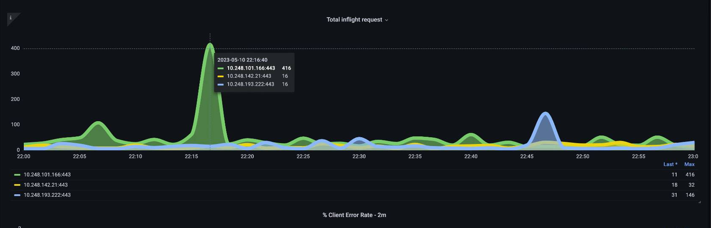
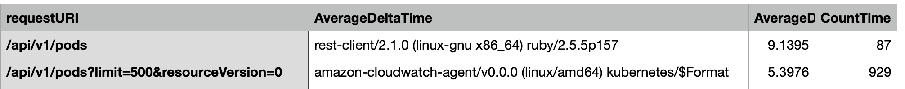
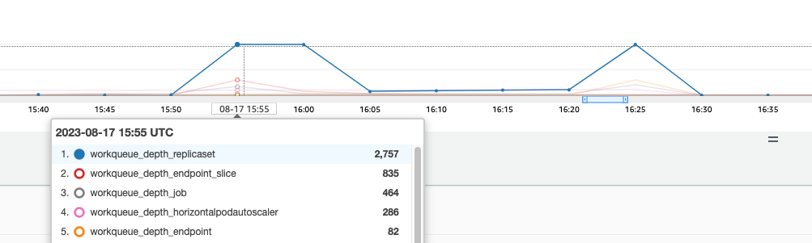

控制平面監控¶
API 伺服器¶
在查看 API 伺服器時，我們必須記住它的其中一個功能是限制入站請求，以防止控制平面過載。在 API 伺服器層面上看起來可能是瓶頸的情況，實際上可能是在保護它免受更嚴重的問題。我們需要考慮增加通過系統的請求量的利弊。為了確定是否應該增加 API 伺服器的值，以下是我們需要注意的一些事項:
- 通過系統的請求延遲是多少?
- 這種延遲是 API 伺服器本身造成的,還是來自下游的 etcd?
- API 伺服器的佇列深度是否是導致這種延遲的因素?
- API 優先級和公平性 (APF) 佇列是否已正確設置,以滿足我們想要的 API 呼叫模式?
問題所在?¶
首先,我們可以使用 API 延遲指標來了解 API 伺服器為請求提供服務的時間。讓我們使用下面的 PromQL 和 Grafana 熱圖來顯示這些數據。
max(increase(apiserver_request_duration_seconds_bucket{subresource!="status",subresource!="token",subresource!="scale",subresource!="/healthz",subresource!="binding",subresource!="proxy",verb!="WATCH"}[$__rate_interval])) by (le)
Tip
有關如何使用本文中使用的 API 儀表板監控 API 伺服器的深入說明,請參見以下部落格文章

這些請求都在一秒鐘以內,這表示控制平面正在及時處理請求。但如果情況並非如此呢?
我們在上面使用的 API 請求持續時間格式是一個熱圖。熱圖格式的好處是它默認告訴我們 API 的超時值(60 秒)。但我們真正需要知道的是在達到超時閾值之前,應該關注的是什麼閾值。作為一個粗略的指南,我們可以使用上游 Kubernetes SLO,可以在這裡找到。
Tip
注意這個陳述中的 max 函數?當使用聚合多個伺服器(默認情況下 EKS 上有兩個 API 伺服器)的指標時,不應該將這些伺服器平均起來。
非對稱流量模式¶
如果一個 API 伺服器 [pod] 負載很輕,另一個負載很重呢?如果我們將這兩個數字平均起來,可能會誤解正在發生的情況。例如,這裡我們有三個 API 伺服器,但所有負載都在其中一個 API 伺服器上。作為一個規則,任何有多個伺服器的東西,如 etcd 和 API 伺服器,在研究擴展和性能問題時都應該分開。

隨著轉向 API 優先級和公平性,系統上的總請求量只是檢查 API 伺服器是否過載的一個因素。由於系統現在是基於一系列佇列工作的,我們必須查看這些佇列是否已滿,以及該佇列的流量是否被丟棄。
讓我們使用以下查詢來查看這些佇列:
Note
有關 API A&F 如何工作的更多信息,請參見以下最佳實踐指南
這裡我們看到了集群默認提供的七個不同的優先級組。

接下來,我們想看看該優先級組正在使用的百分比,這樣我們就可以了解某個優先級別是否被飽和。降低工作負載低級別的請求可能是可取的,但在領導選舉級別的下降就不是了。
API 優先級和公平性 (APF) 系統有許多複雜的選項,其中一些選項可能會產生意外後果。我們在現場看到的一個常見問題是,增加佇列深度到開始添加不必要延遲的程度。我們可以使用 apiserver_flowcontrol_current_inqueue_request 指標來監控這個問題。我們可以使用 apiserver_flowcontrol_rejected_requests_total 來檢查是否有丟棄。如果任何存儲桶超過其並發性,這些指標將是非零值。

增加佇列深度可能會使 API 伺服器成為延遲的重要來源,應該謹慎進行。我們建議對創建的佇列數量保持謹慎。例如,EKS 系統上的共享數量是 600,如果我們創建太多佇列,這可能會減少重要佇列(如領導選舉佇列或系統佇列)中的共享量,從而降低吞吐量。創建太多額外的佇列可能會使這些佇列的大小調整更加困難。
為了專注於您可以在 APF 中進行的一個簡單有影響的更改,我們只需從利用不足的存儲桶中取走共享,並增加使用率達到最大值的存儲桶的大小。通過在這些存儲桶之間智慧地重新分配共享,您可以減少丟棄的可能性。
更多信息,請訪問 EKS 最佳實踐指南中的API 優先級和公平性設置。
API 與 etcd 延遲¶
我們如何使用 API 伺服器的指標/日誌來確定是否存在 API 伺服器問題、上游/下游問題,或者兩者兼有。為了更好地理解這一點,讓我們看看 API 伺服器和 etcd 之間的關係,以及排查錯誤系統是多麼容易。
在下圖中,我們看到 API 伺服器延遲,但我們也看到大部分延遲都與 etcd 伺服器相關,因為圖中顯示大部分延遲都在 etcd 層面。如果在 API 伺服器延遲 20 秒的同時,etcd 延遲 15 秒,那麼大部分延遲實際上都在 etcd 層面。
通過查看整個流程,我們發現不應該單單關注 API 伺服器,還應該尋找表明 etcd 處於壓力之下的信號(即緩慢的應用計數器增加)。能夠僅通過一瞥就快速移動到正確的問題領域,這就是儀表板強大的地方。
Tip
本節中的儀表板可以在 https://github.com/RiskyAdventure/Troubleshooting-Dashboards/blob/main/api-troubleshooter.json 找到

控制平面與客戶端問題¶
在這個圖表中,我們正在尋找在該時間段內完成時間最長的 API 調用。在這種情況下,我們看到一個自定義資源 (CRD) 正在調用一個延遲最嚴重的 APPLY 函數。

有了這些數據,我們可以使用臨時 PromQL 或 CloudWatch Insights 查詢,從審核日誌中提取該時間段內的 LIST 請求,以查看這可能是哪個應用程序。
使用 CloudWatch 找到問題源¶
指標最好用於找到我們想要查看的問題領域,並縮小時間範圍和問題的搜索參數。一旦我們有了這些數據,我們就想轉向日誌,獲取更詳細的時間和錯誤。為此,我們將使用 CloudWatch Logs Insights 將日誌轉換為指標。
例如,要調查上述問題,我們將使用以下 CloudWatch Logs Insights 查詢來提取 userAgent 和 requestURI,以確定是哪個應用程序造成了這種延遲。
Tip
需要使用適當的 Count,以避免拉取正常的 List/Resync 行為上的 Watch。
fields *@timestamp*, *@message*
| filter *@logStream* like "kube-apiserver-audit"
| filter ispresent(requestURI)
| filter verb = "list"
| parse requestReceivedTimestamp /\d+-\d+-(?<StartDay>\d+)T(?<StartHour>\d+):(?<StartMinute>\d+):(?<StartSec>\d+).(?<StartMsec>\d+)Z/
| parse stageTimestamp /\d+-\d+-(?<EndDay>\d+)T(?<EndHour>\d+):(?<EndMinute>\d+):(?<EndSec>\d+).(?<EndMsec>\d+)Z/
| fields (StartHour * 3600 + StartMinute * 60 + StartSec + StartMsec / 1000000) as StartTime, (EndHour * 3600 + EndMinute * 60 + EndSec + EndMsec / 1000000) as EndTime, (EndTime - StartTime) as DeltaTime
| stats avg(DeltaTime) as AverageDeltaTime, count(*) as CountTime by requestURI, userAgent
| filter CountTime >=50
| sort AverageDeltaTime desc
使用這個查詢,我們發現有兩個不同的代理程序在運行大量的高延遲列表操作。Splunk 和 CloudWatch 代理。有了這些數據,我們可以決定刪除、更新或用另一個項目替換這個控制器。

Tip
有關此主題的更多詳細信息,請參見以下部落格文章
調度器¶
由於 EKS 控制平面實例在單獨的 AWS 帳戶中運行,我們將無法抓取這些組件的指標(API 伺服器除外)。但是,由於我們可以訪問這些組件的審核日誌,我們可以將這些日誌轉換為指標,以查看是否有任何子系統造成了擴展瓶頸。讓我們使用 CloudWatch Logs Insights 來查看調度器佇列中有多少未調度的 pod。
調度器日誌中的未調度 pod¶
如果我們能夠直接在自管理的 Kubernetes (如 Kops)上抓取調度器指標,我們將使用以下 PromQL 來了解調度器的積壓。
由於我們無法在 EKS 中訪問上述指標,我們將使用以下 CloudWatch Logs Insights 查詢來查看在特定時間段內無法調度的積壓。然後我們可以深入研究峰值時間段的消息,以了解瓶頸的性質。例如,節點啟動速度不夠快,或調度器本身的速率限制器。
fields timestamp, pod, err, *@message*
| filter *@logStream* like "scheduler"
| filter *@message* like "Unable to schedule pod"
| parse *@message* /^.(?<date>\d{4})\s+(?<timestamp>\d+:\d+:\d+\.\d+)\s+\S*\s+\S+\]\s\"(.*?)\"\s+pod=(?<pod>\"(.*?)\")\s+err=(?<err>\"(.*?)\")/
| count(*) as count by pod, err
| sort count desc
這裡我們看到調度器報錯說 pod 沒有部署,因為 PVC 存儲不可用。
Note
必須打開控制平面的審核日誌記錄才能啟用此功能。限制日誌保留時間也是一個最佳實踐,以防止不必要地推高成本。下面是使用 EKSCTL 工具打開所有日誌功能的示例。
Kube 控制器管理器¶
Kube 控制器管理器(像所有其他控制器一樣)有限制它一次可以執行多少操作。讓我們通過查看 KOPS 配置來查看一些這些標誌是什麼。
kubeControllerManager:
concurrentEndpointSyncs: 5
concurrentReplicasetSyncs: 5
concurrentNamespaceSyncs: 10
concurrentServiceaccountTokenSyncs: 5
concurrentServiceSyncs: 5
concurrentResourceQuotaSyncs: 5
concurrentGcSyncs: 20
kubeAPIBurst: 20
kubeAPIQPS: "30"
這些控制器在集群高變動期間會填滿其佇列。在這種情況下,我們看到 replicaset 控制器的佇列有很大的積壓。

我們有兩種不同的方法來解決這種情況。如果是自管理,我們可以簡單地增加並發 goroutine,但這會對 etcd 產生影響,因為 KCM 會處理更多數據。另一個選擇是減少 deployment 上的 .spec.revisionHistoryLimit 來減少 replicaset 對象的數量,從而減輕這個控制器的壓力。
其他 Kubernetes 功能也可以調整或關閉,以減輕高變動率系統的壓力。例如,如果應用程序中的 pod 不需要直接與 k8s API 通信,那麼關閉將 secret 投射到這些 pod 中就會減少對 ServiceaccountTokenSyncs 的負載。如果可能,這是解決此類問題的更可取的方式。
在我們無法訪問指標的系統中,我們再次可以查看日誌來檢測競爭。如果我們想查看每個控制器或總體級別上正在處理的 API 請求數量,我們將使用以下 CloudWatch Logs Insights 查詢。
KCM 處理的總量¶
# 查詢計算來自 kube-controller-manager 的 API qps,按控制器類型拆分。
# 如果任何特定控制器的值接近 20/秒,它很可能遇到客戶端 API 限流。
fields @timestamp, @logStream, @message
| filter @logStream like /kube-apiserver-audit/
| filter userAgent like /kube-controller-manager/
# 排除與租約相關的調用(不計入 kcm qps)
| filter requestURI not like "apis/coordination.k8s.io/v1/namespaces/kube-system/leases/kube-controller-manager"
# 排除 API 發現調用(不計入 kcm qps)
| filter requestURI not like "?timeout=32s"
# 排除 watch 調用(不計入 kcm qps)
| filter verb != "watch"
# 如果您想獲取來自特定控制器的 API 調用計數,請取消註釋下面適當的行:
# | filter user.username like "system:serviceaccount:kube-system:job-controller"
# | filter user.username like "system:serviceaccount:kube-system:cronjob-controller"
# | filter user.username like "system:serviceaccount:kube-system:deployment-controller"
# | filter user.username like "system:serviceaccount:kube-system:replicaset-controller"
# | filter user.username like "system:serviceaccount:kube-system:horizontal-pod-autoscaler"
# | filter user.username like "system:serviceaccount:kube-system:persistent-volume-binder"
# | filter user.username like "system:serviceaccount:kube-system:endpointslice-controller"
# | filter user.username like "system:serviceaccount:kube-system:endpoint-controller"
# | filter user.username like "system:serviceaccount:kube-system:generic-garbage-controller"
| stats count(*) as count by user.username
| sort count desc
這裡的關鍵是,在研究擴展問題時,要查看路徑中的每一個步驟(API、調度器、KCM、etcd),然後再進入詳細的故障排除階段。在生產環境中,您會發現需要調整 Kubernetes 的多個部分,才能使系統以最佳性能運行。很容易無意中排查只是更大瓶頸的症狀(如節點超時)。
ETCD¶
etcd 使用內存映射文件高效地存儲鍵值對。有一個保護機制來設置這個內存空間的大小,通常設置為 2、4 和 8GB 的限制。數據庫中的對象越少,etcd 在對象更新時需要清理舊版本的工作就越少。這個清理舊版本對象的過程被稱為壓縮。經過多次壓縮操作後,會有一個後續的過程來恢復可用空間,這個過程被稱為碎片整理,它會在達到一定閾值或固定時間間隔時發生。
我們可以做一些用戶相關的操作來限制 Kubernetes 中的對象數量,從而減少壓縮和碎片整理過程的影響。例如,Helm 保留了很高的 revisionHistoryLimit。這使得可以保留更多的舊對象,如 ReplicaSets,以便進行回滾。將歷史限制設置為 2,我們可以將 ReplicaSets 等對象的數量從十個減少到兩個,這反過來會減少對系統的負載。
從監控的角度來看,如果系統延遲峰值以固定的模式出現在數小時之間,檢查這個碎片整理過程是否是源頭會很有幫助。我們可以使用 CloudWatch Logs 來查看這一點。
如果您想查看碎片整理的開始/結束時間,請使用以下查詢: